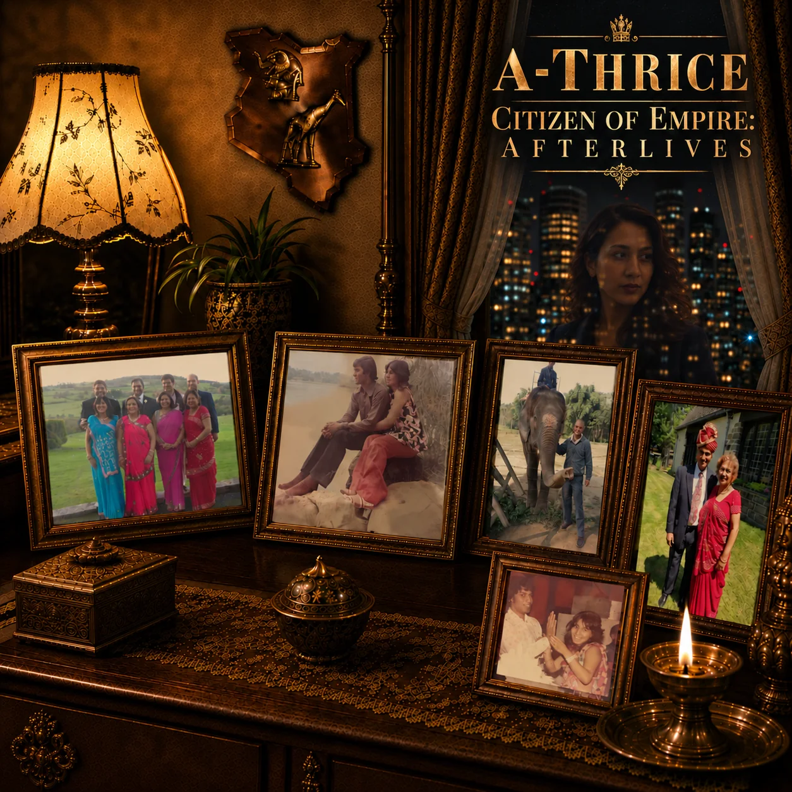

A-THRICE / THE WORDS & THEIR WORLDS
Lyrics &
annotations.
Read the words, listen to the songs, and follow their references. Choose an album or go straight to a track.
Fear as an industry, an interface and a daily routine. Read the lyrics, play each song and explore the artist’s notes.
Album overview & player →
LYRICS / ARTIST’S ANNOTATIONS
Citizen of Empire: Afterlives
Identity, migration and the systems empire leaves behind. The expanded collection includes the full annotations for songs shared with the original Citizen of Empire.
Album overview & player →Browse 17 annotated songs
- 013 Migrations Deep
- 02A Tribe Called 44
- 03British Asian Standard Time
- 04What Tribe?
- 05Punished Into Profit
- 06Suspended Sentence
- 07Protectorate Flow
- 08Mother Tongue in a Minor Key
- 09Empire Calendar
- 10H-1B-Sides
- 11Glass Case Alibi
- 12Commonwealth of Confusion
- 13Reply All
- 14Night Sari Engine
- 15Empire Architecture
- 16Lemniscate of Audacity
- 17Made in London

ORIGINAL EDITION / LYRICS & BACKGROUND
Citizen of Empire
The original eight-track release, plus a supplementary lyric. Read these versions alongside the expanded annotations on Afterlives.
Original album overview & player →Browse original lyrics and Afterlives notes
- 01I’m A-ThriceAfterlives notes: 3 Migrations Deep ↗
- 02A Tribe Called 44Afterlives notes: A Tribe Called 44 ↗
- 03British Asian Standard TimeAfterlives notes: British Asian Standard Time ↗
- 04What Tribe?Afterlives notes: What Tribe? ↗
- 05Protectorate FlowAfterlives notes: Protectorate Flow ↗
- 06H-1B-SidesAfterlives notes: H-1B-Sides ↗
- 07Commonwealth of ConfusionAfterlives notes: Commonwealth of Confusion ↗
- 08Reply AllAfterlives notes: Reply All ↗
- +Lemniscate of AudacityAfterlives notes: Lemniscate of Audacity ↗

ANNOTATION COLLECTION / GENIUS
Controlled Burn
The existing annotation collection for this album is linked here on Genius.
More from the A-Thrice catalogue
Explore all albums →